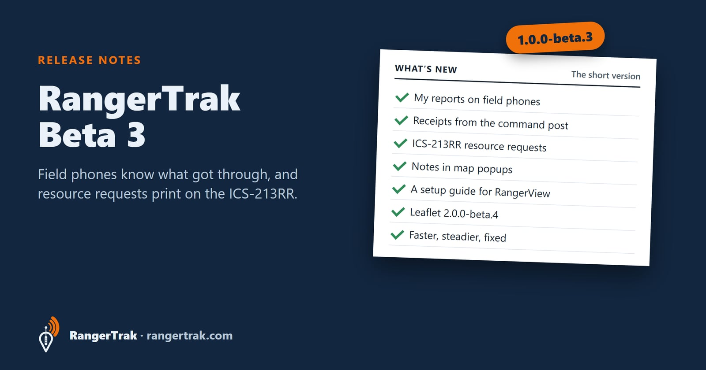
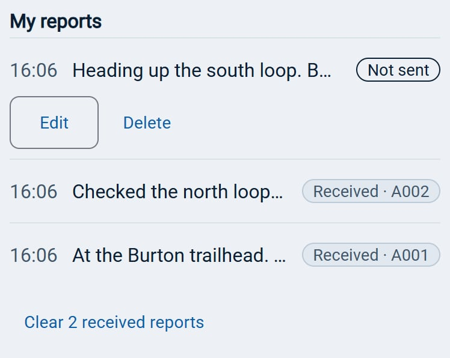
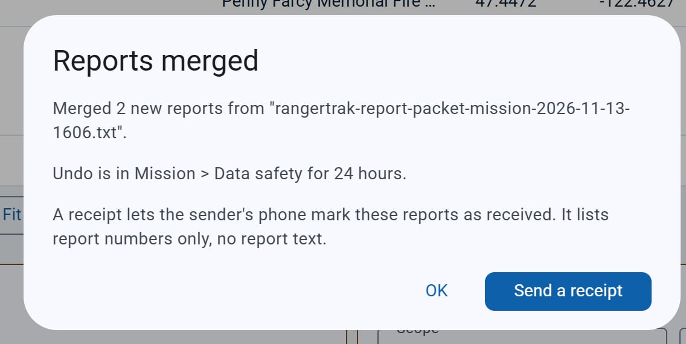
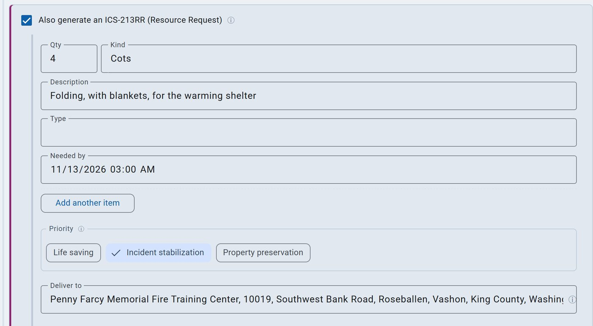
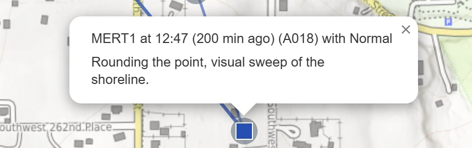
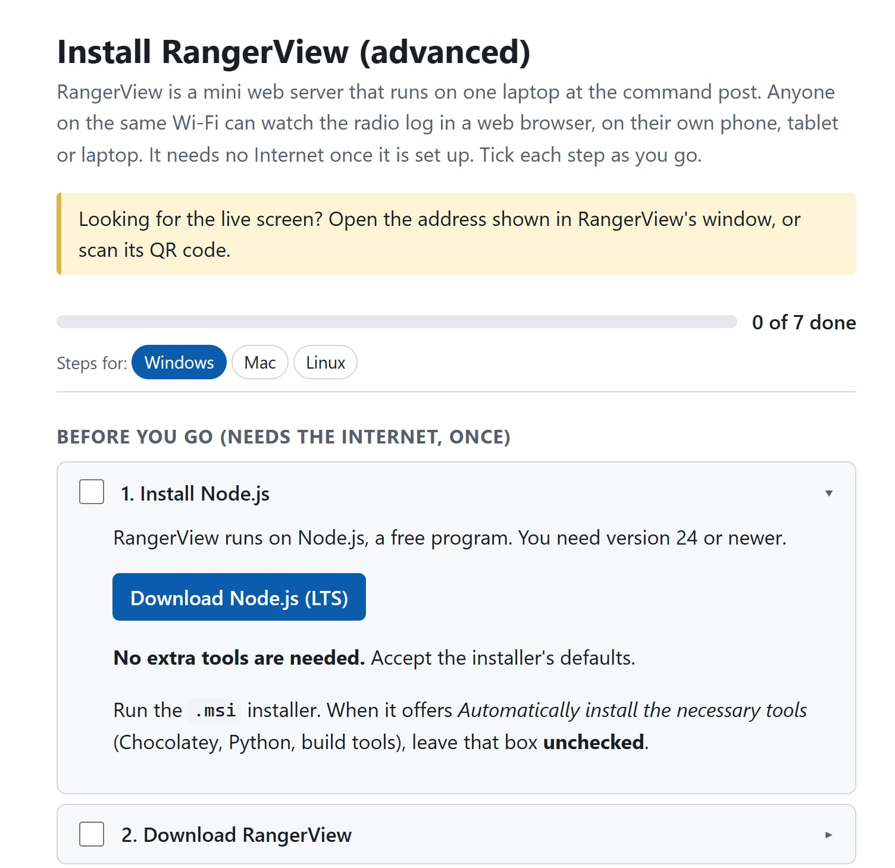
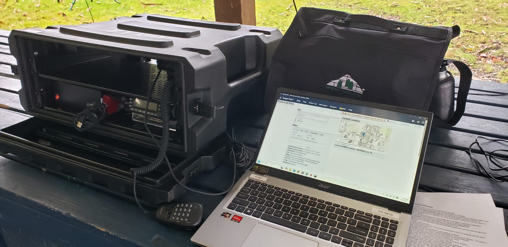

Release notes
RangerTrak Beta 3: What’s New

RangerTrak is a free, open-source radio log and map for the scribe at a CERT, ACS/ARES, SAR or wildland-fire command post. Log who, where, when and what off the radio; it maps them. It works offline once set up, and prints the Form 309 Communications Log, ICS-213, ICS-213RR and ICS-214. I built it. It’s AGPL and will stay free. Try it at rangertrak.org, no account or install needed, and take the tour to learn it.
RangerTrak 1.0.0-beta.3 is out, less than a week after beta 2. I hadn’t planned a post for it. But two questions kept coming back from testers, and this release answers both. From the ranger with a phone: did my reports get there? From whoever sets up RangerView: why won’t it connect?
It’s still a beta. It’s ready to try in a drill, not yet for a real call-out, and until it is, keep the paper log beside it.
The short version
- Field phones keep a list, My reports: Not sent, Sent or Received. Edit or delete a report until it’s sent.
- Receipts: the command post sends one back, and the phone marks those reports Received.
- ICS-213RR resource requests, printed on FEMA’s form.
- Map popups show the report’s notes.
- RangerView (advanced, and new name) has a step-by-step setup guide and a fix for a misleading error.
- Leaflet 2.0.0-beta.4 under the map: smoother zooming with many markers.
Field phones: what got through


A ranger’s phone sends its reports to the command post as a file, a Report Packet, through the phone’s share sheet: email, a text, whatever reaches the scribe’s device. Until now the phone couldn’t tell what had already gone, so a second tap sent everything again, and nobody on the phone knew what had arrived.
- Send N new reports. The button sends only the reports that haven’t gone yet, with only their photos. When there’s nothing new, it says so.
- My reports lists every report on the phone as Not sent, Sent or Received. Until a report is sent you can Edit it or Delete it. Once it’s sent, radio the correction to the scribe, as you would now.
- Send again resends the sent reports the command post hasn’t confirmed. Received reports never go twice.
- Report Packet file names now end in the date and time, so one day’s packets from a phone don’t overwrite each other.
Receipts


When the scribe loads a Report Packet, the summary now offers Send a receipt. It’s a small file that lists report numbers and nothing else: no report text, names or places. Send it back the same way the packet came.
On the phone, Open a receipt marks those reports Received and shows the message number the command post gave each one. Opening the same receipt twice changes nothing. If the scribe confirmed by radio instead, Mark sent reports received does the same by hand. After the mission, or when the phone is getting full, Clear received reports removes only the confirmed ones. It asks first.
It’s the radio habit of “received, over,” for files. It doesn’t replace it: urgent traffic still goes by voice.
Resource requests: the ICS-213RR


In Full view, Entry has a second box beside the ICS-213: Also generate an ICS-213RR. Up to nine order lines, each with a quantity, kind and Needed by; a priority; where to deliver (it starts from the report’s Place); and the on-site contact, filled in from the roster. Washington EMD’s priorities (Life saving, Incident stabilization, Property preservation) tick the matching FEMA box, and every field explains itself when you hover over it.
It prints on FEMA’s 213RR with the message number in the margins, and shows in Messages, on the 309 and in RangerView. It’s in Full view only, so field phones don’t show it. Every demo mission now files a few ICS-213 messages and resource requests, so you can try both without typing one.
Notes on the map


Click a report on the Map and its popup now shows the report’s notes, up to three lines with More and Less, and a 📎 count when it has photos. Before, the popup gave call sign, time and status, and you went back to the Radio Log to find out what was actually said. While writing a drill script I found I couldn’t answer “what did the team at the point report?” from the map. Now you can.
RangerView (advanced)


RangerView is optional, and for someone comfortable installing software. It’s a mini web server that runs on one laptop at the command post; anyone on the same Wi-Fi can watch the radio log in a web browser, on their own phone, tablet or laptop, with no Internet. Until this week it was called the Board, and the beta.3 download still uses that name: rangertrak-board-1.0.0-beta.3.zip, and rangertrak-board.local on the network.
I hand-tested it this week, first on one laptop and then between two computers, and wrote down every place I got stuck. It has since run on a Raspberry Pi 3 B+ too, with a Galaxy S9+ (Android 10, Firefox) watching. Most of this release’s RangerView work came from that list:
- A setup guide: rangertrak.org/view. Seven steps with tick boxes, for Windows, Mac or Linux.
- A fixed error. Before the scribe’s browser had accepted RangerView’s certificate, Test connection said “HTTP 504”, which sent me looking in the wrong place. It now says what’s wrong.
- The numbered address (like https://192.168.1.20) now shows beside the .local name. Some home routers don’t pass the name along; the number still works.
- An honest firewall check on Windows, which offers to fix what it finds.
- Click Allow when Chrome or Edge asks whether rangertrak.org may reach devices on your local network. That’s RangerView asking.
- A log of each run goes in its logs folder: what the window showed and which devices connected, never passwords. In beta.3 it’s on by default; from beta.4 it’s off unless you turn it on. If RangerView gives you trouble, send me the log.
Under the map: Leaflet 2.0.0-beta.4
RangerTrak moved to Leaflet 2 in beta 2, while Leaflet 2 itself is still in beta. Since then Leaflet has shipped two more betas, and RangerTrak now runs on 2.0.0-beta.4. What you might notice:
- Smoother zooming and panning with many markers. Zoom animations no longer get cut short on a busy map, and panning is several times faster in Chrome.
- Two quick clicks on + zoom in two levels, instead of one.
- The layers menu works from the keyboard, and focus goes back to a marker when its popup closes.
Also
- Grid corrections travel. A correction typed into the Radio Log grid now carries over when another device merges a hand-over file. Before, the other device kept its older copy without saying so.
- On a phone, the Radio Log’s cards list newest first, as the grid does.
- Pages load faster: the guide drawer, the after-action notes dialog and Entry’s small map load only when you first need them. On a phone, Entry’s small map should now be ready by the time you scroll to it, so your first tap counts.
- On an iPhone, the full-screen map no longer sits under the menu bar.
- Help, the Field Guide and the Tour cover all of it, and Tour steps now show a picture of the control they name.
The changelog has every fix. The release carries the web zip and the RangerView download, as before.
What’s next


Vashon ACS exercised RangerTrak again on Saturday, with some 15 hams. Their lessons learned are already turning into many of the new features and fixes in beta 4, which comes this week with its own post. I’ll write up the exercise too, good and bad. 1.0 is planned for late November. From 1.0 on, backups made with it will restore in every later version.
Try it
The tour’s field phone module now walks through My reports and receipts. You need a phone and the scribe’s laptop; you play both the ranger and the scribe. New to RangerTrak? Start the tour. Back up any real radio reports before starting!
Tell me
- Would your rangers send a receipt back, or confirm by radio? Which is more realistic for your group?
- If you set up RangerView from rangertrak.org/view, where did you get stuck?
- Does your county use the ICS-213RR, or its own request form?
Use the feedback form (start with “Beta 3”), Help → Contact us inside the app, reply on LinkedIn, or email RangerTrak [at] steadyeoc [dot] com. Please quote the build from the footer.
Next in Field Notes: Field Phones, Up Close.